THE ISLAND
You look around and realise you're on a boat
It slowly rocks back and forth in the ocean
It is tied to a small jetty and beyond lies The Island

This was my favorite project for many reasons.
- I am an enthusiast of games in all forms — board, video and sports. To create one was amazing.
- The project gave me the freedom to craft an entirely new world for others to discover.
- It involved designing challenges for players and solving problems during development.
- It was something I could not only show my friends, but watch them play and enjoy it.
- Utilizing Python to program the game mechanics was both challenging and rewarding.
The task was to write a simple, single player, vintage text-based adventure game in Python3 using an Object Orientated Programming design. With ample free time and a genuine enthusiasm for this project, I perhaps expanded the scope a bit beyond the basic requirements.
The game ultimately featured:
- 11 explorable locations. (Initially required 10 and finalized at 5)
- 13 different action words
- 3 interactive Non Player Characters. (Finalized at 1)
- Dozens of interactive items. (Initially requried 10 and finalized at 5)
- A limited bag to carry moveable items. (Added limit)
- A map showing your current and discovered locations. (Upgraded)
- An extensive help menu. (Added)
- Multiple ending for winning and losing. (Added multiple)
- Puzzles that vary with each playthrough. (Added)
- Character specializations with unique perks. (Added)
- An energy and hydration system to make players more deliberate with their movements. (Added)
If you would like to download and play the game for yourself, CLICK HERE
!!! WARNING !!!
The following may contain spoilers
Coding
This experience gave me valuable insight into what it takes to create a game from scratch, from designing classes and functions to building and populating the world.
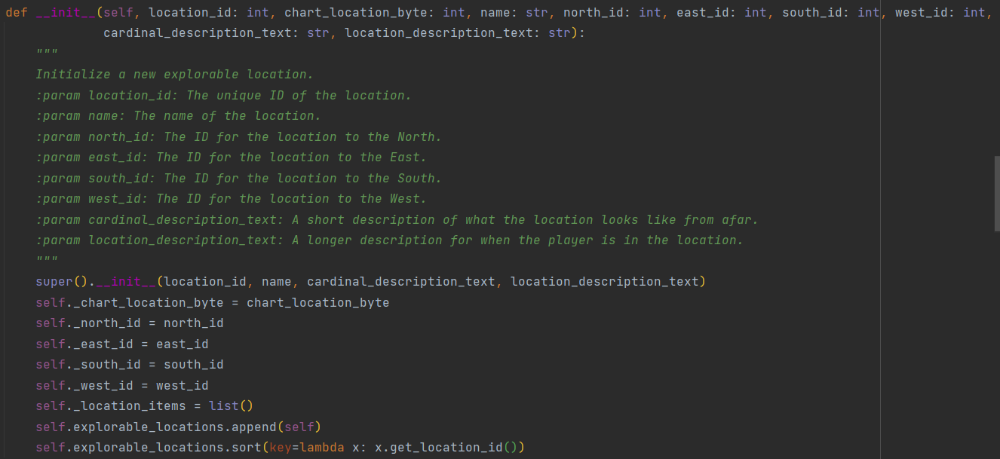 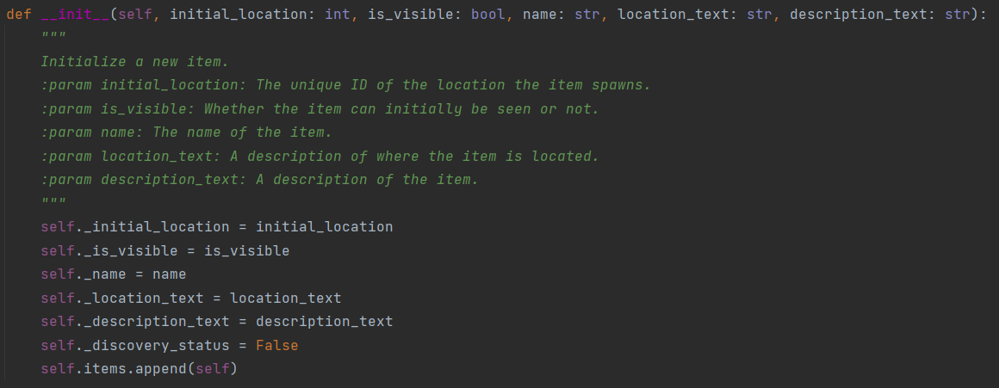Then ultimately displaying them on the screen.
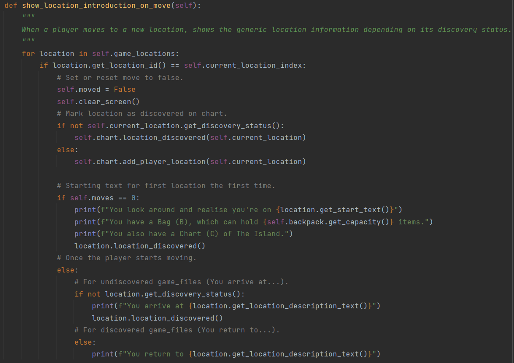 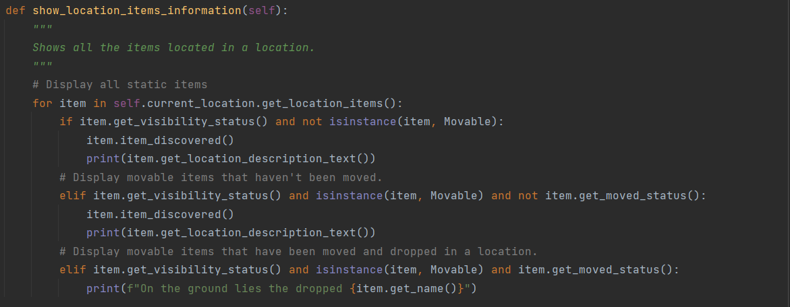And revealed the amount of effort and the countless conditional statements required just to open something, let alone the 2,000+ lines of code dedicated solely to conditionals.
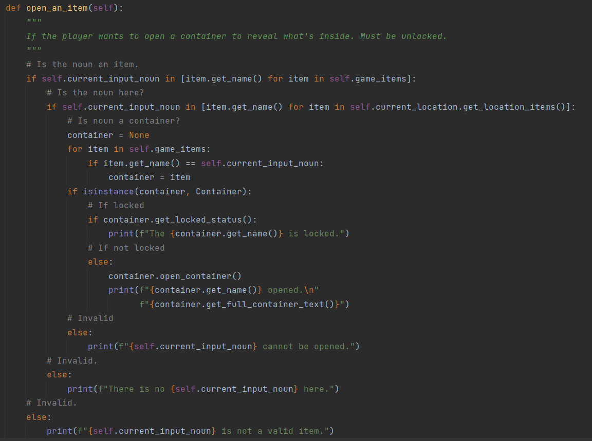Explorable Locations
I initially designed the game world using a 3x3 grid, representing locations on an island. To meet the requirement of having 10 explorable locations, I introduced a boat in the lower-left corner. Surrounding these locations was an ocean, which entering into would result in a game over. Seeking to provide a secondary avenue to completing the game, I expanded the map by adding a new location to the north. Each location was crafted with its own distinct description, items, and ambiance, all serving specific roles within the game's narrative.
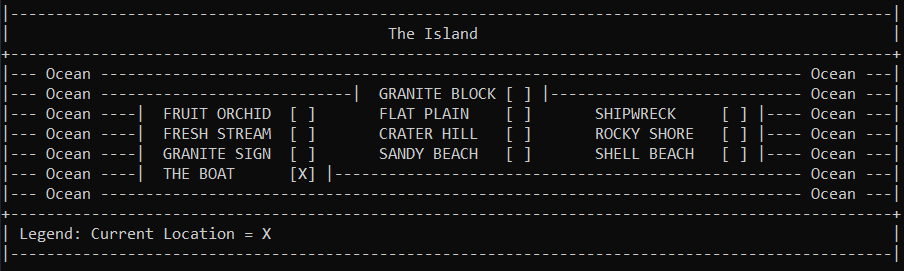Various Action Words
Within the game, you have the option to perform these actions.
The following can be used on their own:
- Help (H) - Opens an in game conversation if you require assistance.
- Refresh (R) - Clears up the screen and displays the original location information again.
- Bag (B) - Opens you bag, displaying capacity and carried items.
- Chart (C) - Opens a map, showing your location and discovered locations.
- Quit (Q) - Leave the game.
The following require an item written in caps lock:
- Look (L) - Take a closer look to discover more information about the item
- Move (M) - Use with a cardinal direct (N, S, E, W) to move to an adjacent location.
- Interact (I) - When you wish to interact with an object or utilize an item from your inventory
- Open (O) - If containers are closed, use this action.
- Take (T) - Place an item in your bag to take with you.
- Drop (D) - Drop an item in your bag, it will remain in this location.
- Speak (S) - Interact with an NPC.
- Eat (E) - Eat or drink a valid item.
Non Player Characters
Three NPCs scattered across the map can assist you in your escape from The Island, but remember, everything comes at a price unless you're charismatic, and that will only get you so far. Help them, and in turn, they can help you. 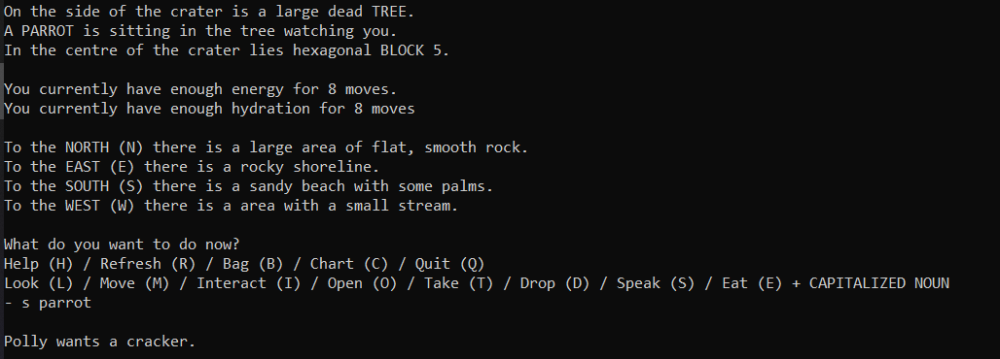Usable Items
Items written in caps lock idicate they have importance and actions can be can be initiated with them, although not all items can use all action words.
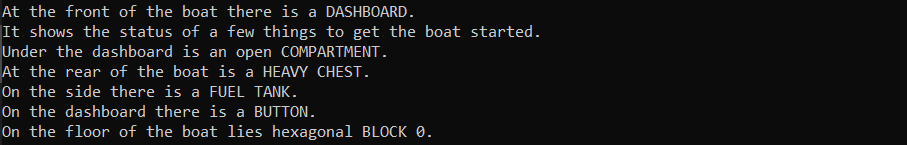Bag
Items need to be move and used, so can be taken and stored in your bag. They can also be dropped if no longer required.
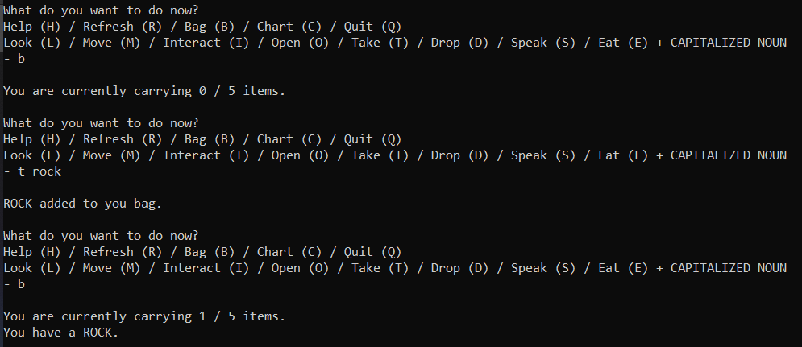Chart
As you explore The Island, your current position will be indicated by an 'X' on the map, and the names of various locations will become known to you as you uncover them.
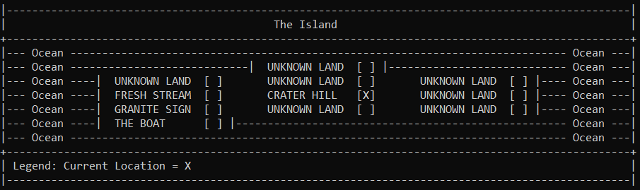Help Menu
I created a comprehensive help menu for the game to assist players. It provides a basic overview of the gameplay essentials, the objective on how to win the game and detailed explanations of how each action word functions within the game.
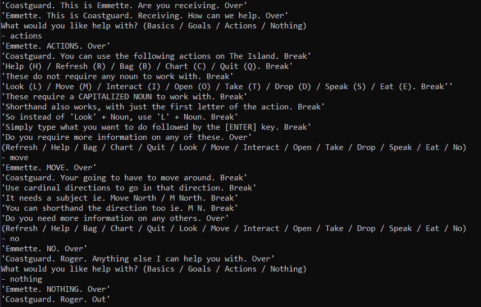Winning and Losing
I contemplated various ways for players to complete the game. The most straightforward method would be to escaping by boat. To utilize the boat, players would need to fulfill certain prerequisites: gathering fuel, power, and a key. To enhance gameplay depth, I decided there would be two alternative methods to acquire each of these essentials. This design ensured that if one item was missed or made inaccessible due to player choices, another path to obtain it would still be available, maintaining the game's playability.
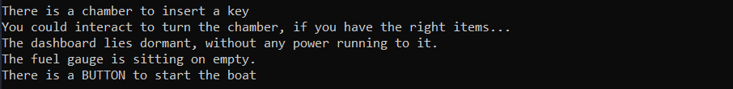For the secondary avenue to completing the game, I incorporated a puzzle that an observant player may be able to solve, rewarding those who explore and observe meticulously.
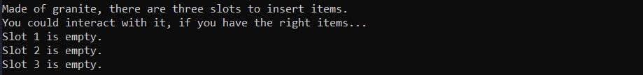There are also various ways to lose, from wandering into the ocean to solving problems incorrectly, and not eating or drinking to being poisened by consuming the wrong thing.
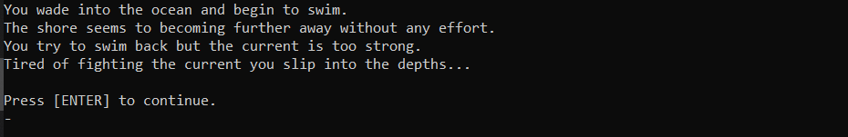Puzzles
I develop some puzzles that would vary with each playthrough. I created two, the first involves a note where one out of ten different cryptic puzzles would appear, and the second where a colour is randomly selected from six options, influencing the values of food items.
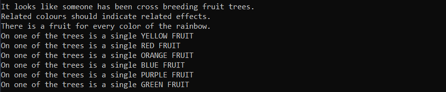Specialization
To enhance the gameplay experience, I provided players with the choice of four perks to assist them during their adventure on The Island.
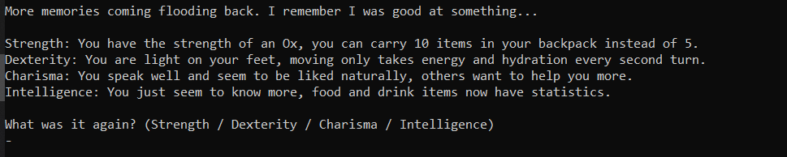Consumables System
To enhance the gameplay experience even more, I introduced energy and hydration mechanics. This compels players to manage their resources more carefully as they explore The Island, preventing endless wandering. Additionally, perks can offer advantages like extended travel capabilities or enhanced knowledge about consumable items.
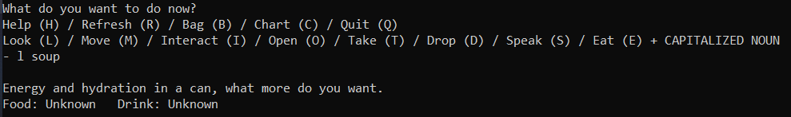